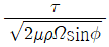
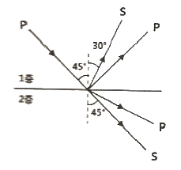

해양자원개발기사 (2013-06-02 기출문제)
1과목: 해양학개론
1. 어느 하천수에 많은 양의 용존 유기물과 Fe가 존재한다. 이 하천수가 estuary를 지나면서 볼 수 있는 용존 유기물질과 Fe의 변화는?
- Fe의 증가 및 용존 유기물질의 감소
- Fe의 증가 및 용존 유기물질의 증가
- Fe의 감소 및 용존 유기물질의 감소
- Fe의 감소 및 용존 유기물질의 불변
(정답률: 알수없음)

2. 다음 중 기초 생산력이 가장 낮은 해역은?
- 용승해역
- 연안해역
- 전선수역
- 북태평양 중심해역(gyre)
(정답률: 알수없음)
3. 심해퇴적물 중 콘드룰(condrule)의 기원은?
- 생물
- 우주
- 화산
- 품성
(정답률: 알수없음)
4. 해수가 담수보다 얼기 어려운 이유로 가장 적절한 것은?
- 염분에 의한 빙점 강하 때문
- 해수는 항상 움직이기 때문
- 해수의 열용량이 더 크기 때문
- 최대밀도가 되는 온도가 빙점보다 낮기 때문
(정답률: 알수없음)
5. 계절수온약층(seasonal thermocline)이 가장 깊어지는 계절은?
- 봄
- 여름
- 가을
- 겨울
(정답률: 알수없음)
6. 계절풍에 대한 설명으로 적합하지 않은 것은?
- 계절에 따라 바람의 방향이 바뀐다.
- 위도에 따른 태양복사 에너지의 차이 때문에 생긴다.
- 지구표면상의 대륙과 해양의 분포와 밀접하게 관련되어 있다.
- 아시아 대륙의 남쪽 및 남동 해상에서 현저하게 나타난다.
(정답률: 알수없음)
7. 파장 15m 3 초인 표면 진행파의 경우 위상속도(phase speed)는?
- 2 m/sec
- 5 m/sec
- 7.5 m/sec
- 15 m/sec
(정답률: 알수없음)
8. Kelvin파에 대한 설명 중 틀린 것은?
- 지구자전의 영향이 나타난다.
- 북반구에서 해면변화는 파의 진행방향에서 왼쪽이 제일 크다.
- 진행속도는 수심에 관계된다.
- 조석파가 전파될 때 나타난다.
(정답률: 알수없음)
9. 대양저의 열류량에 대한 일반적인 양상 중 틀린 것은?
- 대서양 중앙해저 산맥에서는 높은 열류량을 나타낸다.
- 동태평양 해팽에서는 낮은 열류량을 나타낸다.
- 해구에서는 낮은 열류량을 나타낸다.
- 해저산맥의 측면에 따라 열류량이 작은 지역이 띠를 이룬다.
(정답률: 알수없음)
10. 해양에서 심층순환의 원인으로 가장 큰 비중을 차지하는 두 가지 사항을 바르게 묶인 것은?
- 이류와 분자확산
- 해류와 와동확산
- 해류와 분자확산
- 이류와 와동확산
(정답률: 알수없음)
11. Ekman이론에 의하면 충분히 깊은 바다의 표면에서 취송류속도 V0는

로 표현할 수 있다. 이 중 ø가 의미하는 것은?- 바람의 응력
- 해수의 밀도
- 지구상의 위도
- 연직와동 점성계수
(정답률: 알수없음)
12. 해수 중 NO3- - N과 PO43-는 다음 중 어느 것에 속하는가?
- 생물제한성분(Biolimiting element)
- 주요원소(Major element)
- 기체성분(Gaseous element)
- 보존성분(Conservative constituent)
(정답률: 알수없음)
13. 다음 중 경제학적인 가치를 지니고 있는 망간당괸가 가장 많이 매장되어 있는 해역은?
- 태평양
- 지중해
- 인도양
- 대서양
(정답률: 알수없음)
14. 다음 중 지진활동이 가장 활발한 곳은?
- 대양저 산맥
- 해구
- 단멸대
- 열점
(정답률: 알수없음)
15. 파장의 에너지에 대한 설명으로 옳은 것은?
- 에너지는 파고에 비례
- 에너지는 파장에 비례
- 에너지는 파고의 제곱에 비례
- 에너지는 파장의 페곱에 비례
(정답률: 알수없음)
16. 내만에서 조고(潮高)와 조류(潮流)가 일어나는 때의 관계 설명으로 가장 적합한 것은?
- 조고가 최대일 때 조류도 최대이다.
- 조고가 낮을 때 조류가 최대이다.
- 조고가 없을 때 조류가 최대이다.
- 조고와 무관하다.
(정답률: 알수없음)
17. 블랙스모커는 화이트스모커를 온도와 분출속도로 비교한 내용으로 적합한 것은?
- 블랙스모커는 화이트스모커에 비해 온도도 높고 분출속도도 크다.
- 블랙스모커는 화이트스모커에 비해 온도도 높으나 분출속도는 작다.
- 블랙스모커는 화이트스모커에 비해 온도도 낮으나 분출속도는 크다.
- 블랙스모커는 화이트스모커에 비해 온도도 낮고 분출속도도 작다.
(정답률: 알수없음)
18. 다음 중 입도의 크기 순서대로 배열된 것은?
- sand ＞ pebble ＞ silt ＞ clay
- sand ＞ pebble ＞ clay ＞ silt
- pebble ＞sand ＞ silt ＞ clay
- pebble ＞sand ＞ clay ＞ silt
(정답률: 알수없음)
19. 도체가 지자기의 연직 성분을 가로지름에 따라 생기는 전위차를 측정하여 유속을 구하는 해류계는?
- GEK
- Ekman – merz Current Meter
- Thorndlike Meter
- Savanius Rotor
(정답률: 알수없음)
20. 경사류(slope currents)에 관한 설명이 옳지 않은 것은?
- 해면 경사에 비롯된다.
- 순압적(barotropic)이다.
- 경압적(baroclinic)이다.
- 적도잠류는 경사류의 일종으로 간주된다.
(정답률: 알수없음)
2과목: 지질해양학
21. 우리나라 서·남해지역에서 볼 수 있는 모래 퇴적계는 기원적으로 볼 때 대부분이 어떻게 생성되는가?
- 연안류에 의해서
- 조류에 의해서
- 태풍에 의해서
- 쿠로시오의 지류에 의해서
(정답률: 알수없음)
22. 다음 중 적점토(red clay)가 가장 많이 분포되어 있는 곳은?
- 태평양
- 대서양
- 지중해
- 홍해
(정답률: 알수없음)
23. 사주(使州)지형의 형성과 가장 관계가 깊은 것은?
- 해빈표류(海浜漂流)
- 하류표사(河流漂砂)
- 연안표사(沿岸漂砂)
- 해빈표류, 하류표사, 연안표사의 종합작용
(정답률: 알수없음)
24. 심해 퇴적물 중 우즈(ooze)는 생물기원입자가 몇% 함유되어 있는 것을 말하는가?
- 5% 미만
- 10% 미만
- 15% 미만
- 30% 미만
(정답률: 알수없음)
25. 삼각주에서 가장 조립질 퇴적물이 많이 쌓이는 곳은?
- Topset Bed
- Foreset Bed
- Bottomset Bed
- Backset Bed
(정답률: 알수없음)
26. 대륙붕의 성인(成因)을 설명할 때 사용되어지는 용어로 가장 거리가 먼 것은?
- 자연적 제방(natural dam)
- 강에 의해 운반된 퇴적물
- 저탁류(turbidity current)
- 파도의 작용
(정답률: 알수없음)
27. 수동적 대륙주변부(passive cotinental margin)의 일반적인 특징이 아닌 것은?
- 대서양의 대륙주변부가 좋은 예이다.
- 대륙붕의 폭이 넓으며 비교적 퇴적층이 두껍다.
- 해구가 잘 발달한다.
- 대륙사면과 대륙대가 잘 발달되어 있다.
(정답률: 알수없음)
28. 우리나라 서해안에 넓게 발달한 조간대는 과거 언제 이후에 발달한 것인가?
- 약 만년전
- 약 이만년전
- 약 오만년전
- 약 십만년전
(정답률: 알수없음)
29. 해양퇴적물의 미고생물 화석의 안정동위원소를 이용하여 고해양 연구를 하려할 때 다음 중 가장 적합한 것은?
- 규조류
- 방산충류
- 스펀지
- 유공충
(정답률: 알수없음)
30. 대양저의 특징이 아닌 것은?
- 수심은 4000 ~ 6000m 정도이다.
- 지열유량의 평균치가 대륙보다 크다.
- 지각은 대단히 얇다.
- 화산활동의 작용으로 해산들이 존재한다.
(정답률: 알수없음)
31. 다음 중 Curie point와 가장 관련이 깊은 것은?
- 생물잔류자기
- 화학잔류자기
- 퇴적물잔류자기
- 열잔류자기
(정답률: 알수없음)
32. 해구에 분포하는 퇴적물은 주로 어떤 퇴적물로 분류되는가?
- 원양성 퇴적물
- 반원양성 퇴적물
- 육상기원 퇴적물
- 수성기원 퇴적물
(정답률: 알수없음)
33. 하와이제도는 열점에 의해 형성된 섬이다. 이러한 열도가 만들어지려면 열점의 위치가 어느 곳이어야 하겠는가?
- 맨틀 깊은 곳
- 암석권
- 약권
- 모호불연속면
(정답률: 알수없음)
34. 다음 해저지형 중 대서양형 대륙주변부가 아닌 곳은?
- 북미동해안
- 아프리카 동해안
- 인도남동해안
- 자바해구
(정답률: 알수없음)
35. 해양퇴적물과 해양생물 간의 설명으로 옳지 않은 것은?
- 저서동물의 대부분은 무척추 동물이며 대륙붕 지역에 밀도가 높다.
- 심해에도 다양하고 많은 양의 저서동물이 서식한다.
- 저서 유공충보다는 부유 유공충이 퇴적물과 더 밀접한 관계에 있다.
- 저서 유공충은 일반적으로 환경에 민감하며 퇴적물에 따라 조성이 달라진다.
(정답률: 알수없음)
36. 해안에 평행한 방향으로 해빈 퇴적물이 이동하는곳은?
- 파쇄대(wave breaking zone)
- 연안사주(longshore bar)
- 스워쉬(swash) 지역
- 범(berm) 지역
(정답률: 알수없음)
37. 터비다이트(turbidite)에 관한 내용 중 틀린 것은?
- 저탁류에 의해 운반된 퇴적층을 말한다.
- 식별하는데 사용되는 내부적인 특징 중 하나는 점이층리이다.
- 저탁류가 퇴적물을 퇴적시키는 과정에서 조립질의 입자는 먼저, 세립질의 입자는 나중에 퇴적된다.
- 역전된 점이층리가 발견되지 않는 것이 특징이다.
(정답률: 알수없음)
38. 지진파의 focal mechanism은 판구조론 증거의 하나이다. 팽창(dilatational)이 주요 mechanism이 되는 지진은 다음 중 어느 곳에서 가장 활발하게 발생하겠는가?
- 대양저산맥
- 변환단층
- 섭입대(Benioff zone)
- 열점(Hot spot)
(정답률: 알수없음)
39. 대륙붕의 붕단 근방에 쌓여있는 사립퇴적층(sandy deposit)의 분급은?
- 대단히 불량하다.
- 비교적 불량하다.
- 불량하다.
- 양호하다.
(정답률: 알수없음)
40. Deep-Sea Drilling Project 및 Ocean Drilling Project의 주된 목적은?
- 석유탐사
- 고해양 및 대양저 진화연구
- 해저광물 자원조사
- 천연가스 매장량 조사
(정답률: 알수없음)
3과목: 광물학
41. 일반 가정의 난방 및 취사용으로 공급되는 LPG(liquid petroleum gas)의 주성분은?
- 에탄(ethane)
- 프로판(propane)
- 부탄(butane)
- 메탄(methane)
(정답률: 알수없음)
42. 다음 중 저류층의 가치평가 요소가 아닌 것은?
- 공극률(porosity)
- 유체투과율(permeability)
- 수포화율(water satyration)
- 압축강도(compressive strength)
(정답률: 알수없음)
43. 다음 중 가벼운 광물로부터 중광물을 분리하여 회수하는데 가장 효과적인 방법은?
- 핀세트 분리법
- 자력 분리법
- 비중 분리법
- 부유 선광법
(정답률: 알수없음)
44. 다음 중 해수의 분급작용에 의해 표사광상을 형성할 수 있는 광물은?
- 정장석
- 해록석
- 인회석
- 자철석
(정답률: 알수없음)
45. 두 원자 사이에 완전한 전자이동이 일어나지 않고 두 원자가 서로 전자 1개씩을 ㄴ어 전자쌍을 만들어서 결합하는 방식으로 광물의 화학결합 중 가장 강한 결합방식은?
- 이온결합
- 공유결합
- 금속결합
- 반 데르 발스 결합
(정답률: 알수없음)
46. 망간단괴에 포함되어 있는 성분이 아닌 것은?
- 코발트
- 니켈
- 석석
- 몰리브덴
(정답률: 알수없음)
47. 다음 중 감응 자력이 가장 높은 광물은?
- 중정석
- 백운모
- 자철석
- 티탄철석
(정답률: 알수없음)
48. 점토광물에 대한 설명으로 옳지 않은 것은?
- 점토광물은 물이 결정구조 및 물리적인 성질을 결정하는 중요한 성분이다.
- 점토광물은 단위 중량당 표면적이 매우 크다.
- 점토광물은 이온교환성과 팽윤성이 매우 크다.
- 점토광물은 미립의 입자로서 망상형 구조를 가진다.
(정답률: 알수없음)
49. 광물의 정의에 포함될 수 없는 것은?
- 광물은 천연상니다.
- 광물은 어떤 범위안에서 일정한 화학조성을 가지고 있다.
- 광물은 일정한 결정구조를 가지고 있다.
- 화학조성이 같으면 같은 광물이다.
(정답률: 알수없음)
50. 심해저 다금속 열수광상을 형성하는데 필요한 요소에 해당하지 않는 것은?
- 마그마의 점성도
- 금속원소를 제공하는 기원
- 열수를 제공하는 기원
- 집적지(deposition site)
(정답률: 알수없음)
51. 탄산염 광물인 방해석에 대한 설명으로 옳지 않은 것은?
- 삼방정계에 해당하는 광물이다.
- 방해석의 화학식은 MgCO3이다.
- 비중은 2.72 이고, 유리광택을 보인다.
- 퇴적층이나 열수교대광상에서 산출된다.
(정답률: 알수없음)
52. 다음 중 유사한 적층구조를 갖는 점토광물로 연결된 것은?
- 질석- 스멕타이트
- 캐올리나이트 – 할로이사이트
- 녹니석 – 할로이사이트
- 일라이트 – 캐올리나이트
(정답률: 알수없음)
53. 다음 중 탄산염광물로 조합된 것은?
- 인회석 – 석고
- 갈철석 – 석류석
- 경석고 – 능철석
- 돌로마이트 – 마그네사이트
(정답률: 알수없음)
54. 퇴적물의 퇴적작용과 근원암을 규명하는 데 이용될 수 있는 중광물에 속하지 않는 것은?
- 석영(quartz)
- 모나자이트(monazite)
- 저어콘(zircon)
- 감람석(olivine)
(정답률: 알수없음)
55. 해양저 괴상 유화광상을 구성하는 광물로 짝지어진 것은?
- 섬아연석 – 자철석 – 방연석
- 황동석 – 금홍석 – 황비철석
- 방연석 – 회중석 – 황동석
- 황철석 – 황동석 – 섬아연석
(정답률: 알수없음)
56. 망간단괴에 대한 설명으로 옳지 않은 것은?
- 철-망간산화물에 다양한 종류의 동심원상으로 성장, 발달하는 광물괴이다.
- 적점토가 퇴적하는 지역과 느린 퇴적작용으로 형성되는 규질연니질 퇴적물이 퇴적되는 지역에서 많이 생성된다.
- 수심 800~2400m의 해산(seamounts)의 사면에서 주로 생성된다.
- 망간단괴의 기원은 해양성, 속성, 열수, 화산기원으로 분류할 수 있다.
(정답률: 알수없음)
57. 가스를 구성하는 대표적인 탄화수소(hydrocarbon) 성분이 아닌 것은?
- 메탄(methane)
- 이산화탄소(carbon dioxide)
- 에탄(ethane)
- 프로판(propane)
(정답률: 알수없음)
58. 육성기원(terrigenous) 물질로 구성된 해저 퇴적물과 관계없는 것은?
- 어란석
- 석영
- 운모
- 장석
(정답률: 알수없음)
59. 다음 중 화학성분이 주로 탄산질, 규산질, 인산질로 구성된 퇴적물은?
- 암석기원퇴적물
- 생물기원퇴적물
- 자생기원퇴적물
- 외계기원퇴적물
(정답률: 알수없음)
60. 석유의 집유구조(oil trap)와 관계가 없는 지질구조는?
- 절리
- 단층
- 습곡
- 부정합
(정답률: 알수없음)
4과목: 탐사공학
61. 철, 코발트, 망간, 니켈이 풍분한 금속 광물들은 원자 자기모멘트가 외부 자기장을 따라 강하게 배열되는 특성을 보이는데 이러한 자성체를 무엇이라 하는가?
- 반자성체
- 상자성체
- 강자성체
- 유도자화체
(정답률: 알수없음)
62. 비트를 회전시켜 지층을 분쇄함에 동시에 순환하는 시추이수로 생성된 암편을 제거하는 굴진방법으로, 적용할 수 있는 지층의 강도가 다양할 뿐만 아니라 시추속도가 빨라 천부시추를 위해 많이 사용되어지는 굴진 방법은?
- 오거시추(augar drilling)
- 퍼커션시추(percussion drilling)
- 로터리시추(rotary drilling)
- 방향성시추(directional drilling)
(정답률: 알수없음)
63. 해저 석유탐사에 주로 사용되는 탐사방법은?
- 탄성파탐사
- 자력탐사
- 중력탐사
- 전기탐사
(정답률: 알수없음)
64. 양성자의 세차 운동을 이용하여 총자기를 측정하는 자력계는?
- 핵 자력계
- 저울형 자력계
- Schmidt형 자력계
- Flux gate 자력계
(정답률: 알수없음)
65. 대자율은 자력탐사에서 매우 중요한 성질이다. 다음 중 대자율의 평균값이 가장 작은 암석은?
- 점판암
- 화강암
- 현무암
- 사암
(정답률: 알수없음)
66. 전기비저항 검층을 통해서 알 수 있는 정보가 아닌 것은?
- 지층의 공극률
- 지층의 물 포화율
- 지층의 변형률
- 지층의 탄화수소 포화율
(정답률: 알수없음)
67. 굴절법 탄성파 탐사의 자료처리과정에서 주시곡선 작성 시 필요한 기초사항이 아닌 것은?
- 측선 거리
- 음원의 강도
- 주시
- 수진점 간격
(정답률: 알수없음)
68. 시추용 이수가 구비해야 할 조건으로 옳지 않은 것은?
- 얇고 튼튼한 이벽을 만드는 성질이 있어야 한다.
- 적당한 점성을 가져야 한다.
- 전해질의 함유량이 많아야 한다.
- 사분을 포함하지 않아야 한다.
(정답률: 알수없음)
69. 전자파의 속도가 다른 두 층에서 제1층의 유전상수가 2 이고 제2층의 유전상수가 4 일 때 반사계수는? (단, 전자파는 수평 반사면에 수직 입사하였음)
- 0.83
- 0.67
- 0.33
- 0.17
(정답률: 알수없음)
70. 국제단위계(SI)에서 자기장 강도의 단위는 나노테슬라(nT, nanotesla)이며, cgs단위계에서는 0e(0erssed)이다. 10e는 단위 자극당 1dyne의 자기장 강도이다. 10e는 몇 감마(γ, gamma)인가?
- 106 γ
- 105 γ
- 104 γ
- 103 γ
(정답률: 알수없음)
71. 탄성파 탐사를 수행하여 자료를 분석하면, 주어진 주파수 영역에서 에너지는 같으나 위상이 각기 다른 모든 주파수 성분을 가진 무작위 에너지가 나타나기도 한다. 이것을 무엇이라고 하는가?
- 백색잡음(White noise)
- 누화(Cross talk)
- 내부변조잡음(Intermodulation noise)
- 충격잡음(Impulse noise)
(정답률: 알수없음)
72. 암석을 통과하는 S파 속도와 P파 속도 비(Vs/Vp)의 수평적 변화를 검토하여 알 수 있는 것이 아닌 것은?
- 암석의 고결화 정도
- 암석의 파쇄 정도
- 암석의 절리 발달 상태
- 암석내 유체 포화도
(정답률: 알수없음)
73. 수소 원자의 밀도를 측정하여 저류층의 공극 속에 있는 물과 탄화수소의 포화정도를 산출하는데 이용하는 검층방법은?
- 감마선 검층
- 중성자 검층
- 공경 검층
- 음파 검층
(정답률: 알수없음)
74. 탄성파를 분류할 때 표면파에 해당하지 않는 것은?
- 압축파(compressional wave)
- 레일리파(Rayleigh wave)
- 러브파(Love wave)
- 스톤리파(Stoneley wave)
(정답률: 알수없음)
75. 탐사지역에서 중력이상이 발생하여 부게보정(Bouguer correction)을 실사하였다. 부게보정에 대한 설명으로 맞는 것은?
- 지구 중심으로부터 각 측점까지의 거리가 고도차만큼 서로 다르기 때문에 나타나는 중력의 차이를 보정하여 주는 것이다.
- 조사지역내의 모든 측점에서 측정한 중력치를 임의로 설정한 일정한 고도의 기준면에서의 중력치로 환산하여 주는 것이다.
- 측점과 기준면 사이에 존재하는 물질의 인력에 의하여 나타나는 중력의 차이를 보정하여 주는 것이다.
- 해상 또는 항공 중력 측정시 속도가 빠른 배나 비행기를 이용하여 나타나는 중력이상 값을 보정하여 주는 것이다.
(정답률: 알수없음)
76. 해수면을 기준으로 측정까지의 고도차라 2m일 때 프리에어 보정(free-air correction) 값은 얼마인가?
- 약 0.15 mGal
- 약 0.31 mGal
- 약 0.62 mGal
- 약 1.24 mGal
(정답률: 알수없음)
77. 반사법 탄성파 탐사의 자료처리 과정 중 CDP중합을 시행하기 이전의 필수 처리단계가 아닌 것은?
- 구조보정
- CDP모음(취합)
- NMO보정
- 속도분석
(정답률: 알수없음)
78. 다음의 그림에서 2층의 S파 속도가 2000m/s 일 때, 스넬의 법칙을 이용하여 1층의 S파 속도를 구하면 얼마인가?

- 866m/s
- 1414m/s
- 1732m/s
- 2449m/s
(정답률: 알수없음)
79. 다음 중 자연감마선 검층에서 측정되는 감마선 방출의 주된 원소가 아닌 것은?
- 우라늄238(U238)
- 토륨232(Th232)
- 칼륨40(K40)
- 세슘137(Cs137)
(정답률: 알수없음)
80. 해양 탄성파 탐사의 에너지원(음원)에 해당하지 않는 것은?
- 에어건
- 스파커
- 슬리브건
- 바이브로사이스
(정답률: 알수없음)
5과목: 해양계측학
81. 해상 음파 탐사에서 사용하는 수중청음기(hydrophone)란?
- 음원(音源)을 찾는 장비이다.
- 해저 지층간의 반사파나 굴절파를 수신하는 장비이다.
- 파도의 영향을 점검하는 장치이다.
- 해수의 음파속도를 측정하는 장치이다.
(정답률: 알수없음)
82. 다음 중 해저지형의 관찰로 대양저산맥의 확장을 연구하려 할 때 사용되는 장비로 가장 적합한 것은?
- 수중카메라
- 측면주사 음향탐지기
- 음향측심기
- 해상중력계
(정답률: 알수없음)
83. 해양학에서 사용하는 σt가 25.78로 표시되었다면 실제 밀도는?
- 1.2578 g/cm3
- 1.02578 g/cm3
- 1.002578 g/cm3
- 1.0002578 g/cm3
(정답률: 알수없음)
84. 퇴적물의 조립질 입자의 입도 분석에 사용되는 기기와 가장 거리가 먼 것은?
- 기계식 요동기(Ro-Tap)
- Air-Jet Sieve
- Rapid Sediment Analyzer
- Pycnometer
(정답률: 알수없음)
85. 공기중 전파의 속도는?
- 약 0.1 km/μs
- 약 0.2 km/μs
- 약 0.3 km/μs
- 약 0.4 km/μs
(정답률: 알수없음)
86. 북반구에서 해수의 밀도가 균일하고 수심이 매우 큰 바다 표층에서 코리올리 힘과 바람에 의한 마찰력 사이에 평형을 이룰 때 표층해류의 방향은?
- 바람의 진행방향
- 바람의 진행방향과 반대
- 바람의 진행방향에서 45° 오른쪽
- 바람의 진행방향에서 45° 왼쪽
(정답률: 알수없음)
87. 조석관측 방법으로 이용되지 않는 것은?
- 부표식
- 압력식
- 표척식
- 지자기식
(정답률: 알수없음)
88. 주로 LANDSAT에서 사용되는 탐사 장비로 가시광선 및 근적외선 영역의 전자 에너지를 4~5개를 채널로 구분하여 감지하는 장비는?
- ALT
- AVHRR
- MSS
- SASS
(정답률: 알수없음)
89. Snad나 Silt 또는 이들이 혼합된 퇴적물을 많이 채취할 때 사용되는 채니기로 가장 적합한 것은?
- Ekman type sampler
- Dredge
- Core sampler
- Sigsbee sampler
(정답률: 알수없음)
90. 현탁성물질을 여과하는데 통상 사용되는 Millipore filter HA형의 공경은 약 얼마인가?
- 0.45 μm
- 0.65 μm
- 0.30 μm
- 1 μm
(정답률: 알수없음)
91. 표류물에 의한 해류의 측정법이 아닌 것은?
- 투명도판에 의한 방법
- 해류판에 의한 방법
- 해류병에 의한 방법
- 선박의 추측이치와 실측이치의 차에에 의한 방법
(정답률: 알수없음)
92. 수압뿐만 아니라 기압도 같이 감지되고 유속이 빠른 곳에서는 동압력에 의한 압력 감소도 감지되는 조석 관측기기의 형식은?
- 기계식
- 전기 저항식
- 부표식
- 압력식
(정답률: 알수없음)
93. 해표면의 수온분포를 위해 사용되고 있는 열적외선 AVHRR의 몇 번째 채널에서 감지하는가?
- 1
- 2
- 3
- 4
(정답률: 알수없음)
94. 다음 중 부진동(Seiche)의 설명이 가장 적합한 것은?
- 만에서 조석 진동 후에 나타나는 진동현상
- 외력에 의해서 생긴 만내의 진동현상
- 해저 지진에 의해 생긴 진동현상
- 기상현상에 수반된 연안진동현상
(정답률: 알수없음)
95. 해수와 담수의 빙점에 관한 설명 중 옳은 것은?
- 해수와 담수의 빙점은 동일하다.
- 담수는 해수의 빙점보다 낮다.
- 해수가 담수보다 빙점이 낮다.
- 해수와 담수의 빙점은 일정하지 않다.
(정답률: 알수없음)
96. 1개월 혹은 2개우러 정도의 단기 관측으로 얻어진 평균 해면이나 조화상수는 주로 어떤 자료를 참조하여 년 평균값으로 보정하여 사용하는가?
- 주변 해역 관측치 평균
- 과거 동일지점의 관측 자료
- 인근 표준항 자료
- 주변 해역의 비조화 상수
(정답률: 알수없음)
97. 인공위성에 의한 해양의 원격탐사에서 이용되지 않는 전자파 영역은?
- 감마선대
- 가시광선대
- 적외선대
- 레이다파대
(정답률: 알수없음)
98. 피스톤 시추기에서 채취된 퇴적물이 빠지지 않게 하는 부분은?
- Nose cone
- Core catcher
- Piston immobilizer
- Trigger arm
(정답률: 알수없음)
99. 바람에 의한 순수 취송류는 바람속도의 약 몇 % 정도인가?
- 0.03%
- 0.35%
- 3.5%
- 35%
(정답률: 알수없음)
100. 대조(spring tide)와 다음 대조와의 시간간격은?
- 약 1/2일
- 약 1일
- 약 7일
- 약 15일
(정답률: 알수없음)